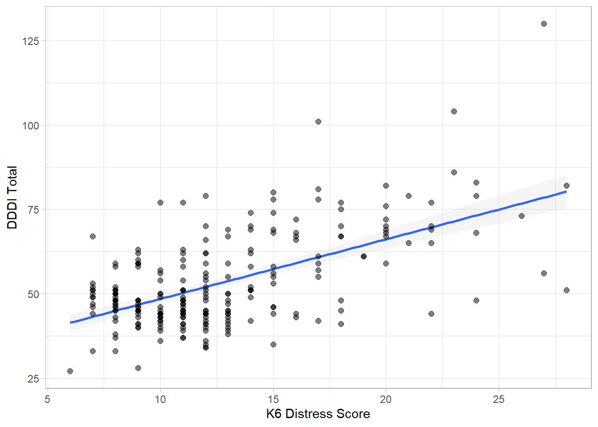
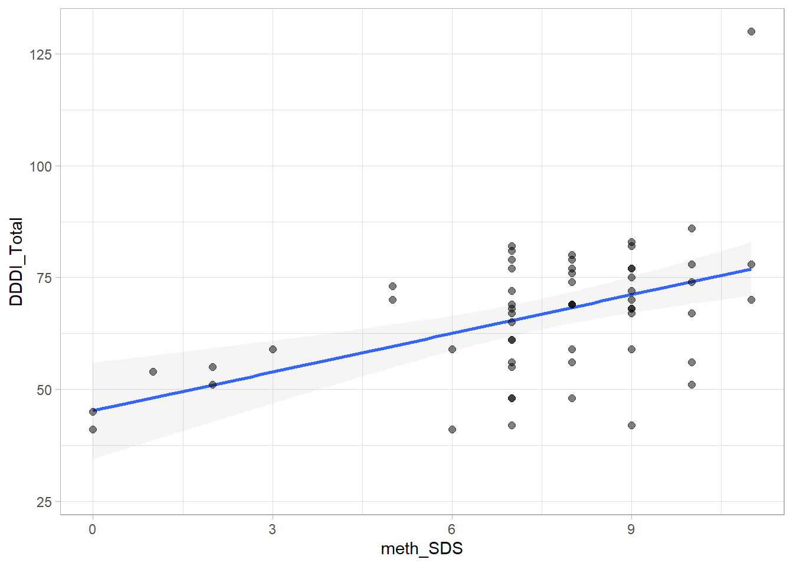
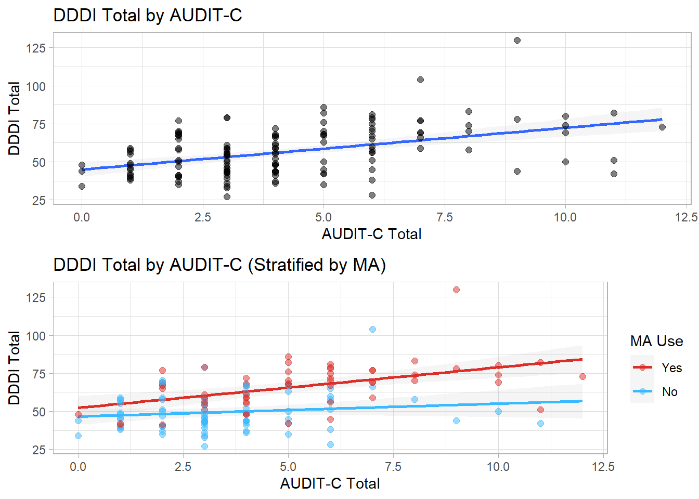
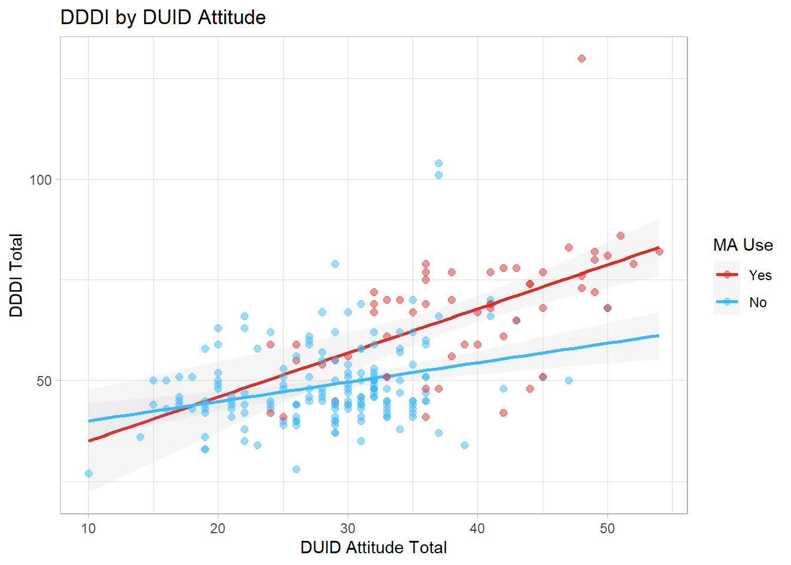

3 Bivariate Descriptives
This section will explore bivariate relationships between each key predictor variable (STAXI-2, K6 Distress, SDS, Attitudes) and will examine in more detail their relationship with the outcome variable (DDDI). There will be particular attention paid on the relationship between the predictors and the outcome variable and we will seek to graphically identify whether there may be an y interactions present between the predictor variables and MA use on the DDDI.
3.1 STAXI-2
3.1.1 State Anger (STAXI-S)
DDDI by STAXI-S (ignoring MA)
DDDI by STAXI-S (Stratified by MA)
3.1.2 Trait Anger (STAXI-T)
DDDI by STAXI-T (ignoring MA)
DDDI by STAXI-T (stratified by MA Use)
DDDI Subscales by STAXI-T (stratified by MA Use)

3.2 K6 Distress Scale

3.3 SDS Scale
Bivariate relationship between SDS and DDDI (MA Users only) 
3.4 Drug Use
3.4.1 Alcohol (AUDIT-C)

3.5 Age
## `geom_smooth()` using formula 'y ~ x'
## `geom_smooth()` using formula 'y ~ x'
3.6 Attitudes
3.6.1 DUI

3.7 Correlation Matrix
| DDDI_Total | DDDI_AD_Total | DDDI_RD_Total | DDDI_NE_Total | age | k6_total | S_Ang_Total | T_Ang_Total | T_Ang_R_Total | T_Ang_T_Total | AUDIT_Total | DUI_attitude_Total | DUID_attitude_Total | |
|---|---|---|---|---|---|---|---|---|---|---|---|---|---|
| DDDI_Total | 1.00 | ||||||||||||
| DDDI_AD_Total | 0.88*** | 1.00 | |||||||||||
| DDDI_RD_Total | 0.93*** | 0.83*** | 1.00 | ||||||||||
| DDDI_NE_Total | 0.49*** | 0.15* | 0.19** | 1.00 | |||||||||
| age | -0.22*** | -0.16* | -0.21*** | -0.13* | 1.00 | ||||||||
| k6_total | 0.59*** | 0.47*** | 0.53*** | 0.36*** | -0.12 | 1.00 | |||||||
| S_Ang_Total | 0.67*** | 0.62*** | 0.64*** | 0.28*** | -0.15* | 0.49*** | 1.00 | ||||||
| T_Ang_Total | 0.65*** | 0.61*** | 0.57*** | 0.33*** | -0.09 | 0.44*** | 0.71*** | 1.00 | |||||
| T_Ang_R_Total | 0.49*** | 0.43*** | 0.45*** | 0.25*** | -0.04 | 0.24*** | 0.43*** | 0.84*** | 1.00 | ||||
| T_Ang_T_Total | 0.63*** | 0.63*** | 0.54*** | 0.30*** | -0.09 | 0.51*** | 0.73*** | 0.87*** | 0.52*** | 1.00 | |||
| AUDIT_Total | 0.44*** | 0.41*** | 0.42*** | 0.28** | -0.10 | 0.44*** | 0.36*** | 0.37*** | 0.27** | 0.34*** | 1.00 | ||
| DUI_attitude_Total | 0.59*** | 0.50*** | 0.59*** | 0.22*** | 0.05 | 0.53*** | 0.49*** | 0.40*** | 0.25*** | 0.44*** | 0.40*** | 1.00 | |
| DUID_attitude_Total | 0.58*** | 0.53*** | 0.61*** | 0.17** | -0.19** | 0.48*** | 0.42*** | 0.34*** | 0.22*** | 0.35*** | 0.40*** | 0.56*** | 1.00 |